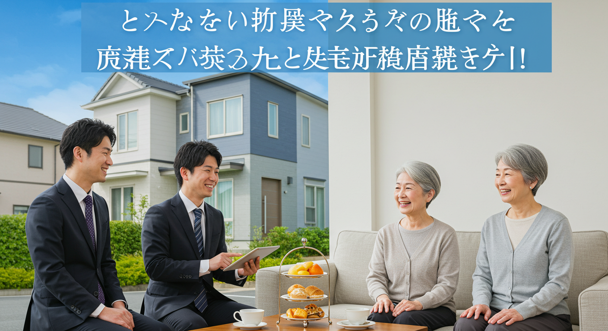

リフォーム営業で成果を出す！新築経験を活かす提案術と成功の秘訣
新築住宅の営業として、お客様の「夢のマイホーム」という大きな買い物に立ち会い、その喜びを分かち合ってきたあなたへ。これまでの経験で培われた知識、スキル、そして何よりお客様に寄り添う心は、かけがえのない財産です。
もし今、あなたがキャリアの次のステップとして「リフォーム営業」という分野に興味を抱いているのなら、それは素晴らしい選択かもしれません。しかし同時に、「新築とリフォームでは、勝手が違うのではないか」「自分のスキルは通用するのだろうか」といった不安を感じているのではないでしょうか。
ご安心ください。その不安は、新しい世界へ踏み出す誰もが抱く自然な感情です。そして、あなたが新築営業で培ってきた経験は、リフォーム営業の世界でこそ、大きな輝きを放つ強力な武器となります。
リフォーム営業は、単に古いものを新しくする仕事ではありません。そこにお住まいのお客様一人ひとりの歴史、想い、そしてこれからの未来に深く寄り添い、今ある住まいを「最高の我が家」へと生まれ変わらせる、創造的でやりがいに満ちた仕事です。お客様の「困った」を「良かった」に変え、その笑顔をすぐそばで見ることができるのは、リフォーム営業ならではの醍醐味と言えるでしょう。
この記事では、新築営業の経験を持つあなたが、リフォーム営業という新しいステージでスムーズにスタートを切り、そして確かな成果を上げていくための羅針盤となることを目指しています。新築営業との違いを明確に理解し、あなたの強みを最大限に活かす方法から、具体的な提案術、お客様との長期的な信頼関係を築く秘訣まで、一つひとつ丁寧に、分かりやすく解説していきます。
読み終える頃には、きっとリフォーム営業への漠然とした不安は、確かな自信と未来への希望に変わっているはずです。さあ、一緒にリフォーム営業の奥深く、そして魅力的な世界への扉を開けていきましょう。
リフォーム営業とは？新築営業との違いを解説
まずは、リフォーム営業の基本的な役割と、あなたが経験してきた新築営業との間にある違いについて、じっくりと理解を深めていきましょう。この違いを正確に把握することが、あなたの経験を新しい分野で活かすための第一歩となります。
リフォーム営業の役割と重要性
リフォーム営業と聞いて、どのような仕事を思い浮かべるでしょうか。「キッチンの交換を提案する人」「壁紙の張り替えを案内する人」といったイメージがあるかもしれません。もちろんそれらも仕事の一部ですが、本質はもっと奥深いところにあります。
リフォーム営業の最も重要な役割は、「お客様の暮らしのコンサルタント」であることです。私たちは単に建材や設備といった「モノ」を売るのではありません。リフォームという手段を通じて、お客様が抱える住まいの悩みや不満を解決し、より快適で、安全で、心豊かな「暮らし」そのものを提案するのです。
例えば、あるお客様が「冬場のお風呂が寒くて…」と相談に来られたとします。この時、ただ最新のユニットバスを提案するだけでは不十分です。なぜ寒いのか、その原因を追求する必要があります。窓からの冷気か、壁の断熱性能か、換気扇の仕組みか。ヒアリングと現地調査を通じて根本原因を探り、「断熱性能の高い窓への交換」や「浴室暖房乾燥機の設置」といった、ユニットバス交換以外の選択肢も含めて、お客様にとって最適な解決策を提示するのが、暮らしのコンサルタントとしての役割です。
さらに、お客様自身も気づいていない潜在的なニーズを掘り起こすことも重要です。「お風呂が寒い」という主訴の裏には、「ヒートショックが心配」「掃除が大変」「将来、介護が必要になった時が不安」といった、言葉になっていない想いが隠れているかもしれません。そうした想いを丁寧に引き出し、「手すりの設置」や「滑りにくい床材」、「段差の解消」といった将来を見据えた提案を付け加えることで、お客様の満足度は飛躍的に高まります。
現代の日本は、新しいものを次々と建てる「フロー型社会」から、今あるものを大切に長く使う「ストック型社会」へと移行しています。空き家問題が深刻化する一方で、愛着のある住まいを、ライフステージの変化に合わせてリフォームし、快適に住み続けたいと考える人は増え続けています。このような社会背景の中で、既存住宅の価値を維持・向上させるリフォーム営業の役割は、ますます重要性を増しているのです。
お客様の人生に深く関わり、その大切な資産である住まいを、より価値あるものへと再生させる。そして、リフォームが完成した時のお客様の満面の笑みと「ありがとう」の言葉。これこそが、リフォーム営業という仕事の何よりのやりがいであり、社会的な意義と言えるでしょう。あなたは、お客様の過去と現在を受け止め、未来の幸せな暮らしを創造する、かけがえのないパートナーなのです。
新築営業との決定的な3つの違い
新築営業で輝かしい実績を上げてきたあなただからこそ、リフォーム営業との違いを明確に意識することが成功への近道となります。両者は同じ「住宅」を扱う営業職ですが、そのアプローチや求められるスキルには、いくつかの決定的な違いが存在します。ここでは、特に重要な3つのポイントに絞って解説します。
-
対象：ゼロからの創造 vs 既存の中での最適化
新築営業が扱うのは、基本的に「何もない土地」です。お客様の夢や理想をヒアリングし、それをゼロから形にしていく、いわば真っ白なキャンバスに絵を描くような仕事です。間取り、デザイン、仕様、そのすべてに高い自由度があります。
一方、リフォーム営業が向き合うのは「すでにある建物と、そこで営まれている暮らし」です。これは、すでに描かれた絵に加筆修正し、より魅力的な作品に仕上げていく作業に似ています。そこには、変えられない柱や壁、既存の配管や配線の位置、建築基準法などの法的な制約といった、様々な「制約」が存在します。
この「制約」こそが、リフォームの難しさであり、面白さでもあります。例えば、「この壁をなくしてリビングを広くしたい」というご要望があったとしても、その壁が建物の構造上、取り払えない「耐力壁」である可能性も少なくありません。その場合、なぜ取り払えないのかを専門的な知識に基づいて分かりやすく説明し、「壁は残したまま、大きな開口部を設けて視覚的な広がりを出す」「間接照明を使って空間を広く見せる」といった代替案を提案する力が求められます。
また、リフォームでは解体してみて初めて分かる問題に直面することも日常茶飯事です。壁を剥がしたら柱が腐っていた、床をめくったらシロアリの被害が見つかった、など。こうした予期せぬ事態に冷静に対処し、お客様に状況を説明し、追加工事の必要性と見積もりを提示して納得を得る、といった対応力も不可欠です。
新築の自由な創造とは異なり、リフォーム営業には、与えられた制約の中で、お客様の要望を最大限に叶えるための知識、経験、そして創造力が問われるのです。
-
顧客の動機：未来への「夢」 vs 現在への「不満・不安」
新築住宅を購入するお客様の多くは、「新しい家で、こんな素敵な暮らしがしたい」という未来への希望や夢に満ち溢れています。営業担当者は、その夢を共有し、共に膨らませていく役割を担います。会話の中心は、未来に向けたポジティブな話題が多くなるでしょう。
対して、リフォームを検討するお客様の動機は、「今、ここにある不満・不安・不便の解消」からスタートすることが大半です。「キッチンが古くて使いにくい」「お風呂が寒くて危険」「地震が来たらこの家は大丈夫だろうか」といった、現状に対するネガティブな感情がきっかけとなります。
したがって、リフォーム営業のヒアリングでは、まずお客様が何に困り、何に不安を感じているのかを、深く、共感をもって聴く姿勢が何よりも重要になります。お客様の「不」の感情に寄り添い、「そうですよね、それは大変でしたね」「ご心配されるお気持ち、よく分かります」と受け止めることで、初めて信頼関係の第一歩が築かれます。
そして、その「不」を解消した先に、どのような快適で安心な暮らしが待っているのか、というポジティブな未来を具体的にイメージさせてあげることが提案の鍵となります。「このリフォームをすれば、冬でも暖かいお風呂にゆっくり浸かって、一日の疲れを癒せますよ」「耐震補強を行うことで、万が一の地震の時も、ご家族が安心してこの家で過ごせます」というように、課題解決の先にある「価値」を伝えることが求められるのです。夢を語る新築営業とは異なり、リフォーム営業は、お客様の悩みに寄り添うカウンセラーのような側面が強いと言えるでしょう。
-
関係性の深度：一期一会 vs 末永いお付き合い
新築の場合、建物の引き渡しが営業担当者としての役割の一つのゴールとなり、その後のアフターメンテナンスは別の部署が担当することも少なくありません。もちろん、お客様との関係がそこで終わるわけではありませんが、関わりの密度は少しずつ薄れていくのが一般的です。
しかし、リフォーム営業は違います。お客様との関係は、工事が終わってからが本当のスタートと言っても過言ではありません。なぜなら、人の暮らしは変化し続けるからです。
今回、キッチンのリフォームをご依頼いただいたお客様が、5年後には「子供が独立したので、夫婦二人のためのリビングにしたい」、10年後には「親との同居のためにバリアフリーにしたい」と、新たなニーズを抱える可能性があります。その時に、「そういえば、あの時の営業さん、親身になってくれたな。また相談してみよう」と思っていただけるかどうか。それがリフォーム営業の真価が問われる点です。
そのためには、一度の工事で終わりではなく、定期的な点検や情報提供を通じて、お客様との接点を持ち続けることが重要になります。まるで「住まいの主治医」のように、何か困ったことがあれば真っ先に顔を思い浮かべてもらえる存在になること。これが、リフォーム営業における理想の関係性です。一回一回の出会いを大切にし、信頼を積み重ねていくことで、お客様の人生に末永く寄り添うことができる、非常に人間味あふれる仕事なのです。
新築営業の経験が活きるポイント
さて、新築営業とリフォーム営業の違いを見てきましたが、不安になる必要は全くありません。むしろ、あなたがこれまでに培ってきた経験は、リフォーム営業の世界で強力なアドバンテージとなります。具体的に、どのような経験が活きるのかを見ていきましょう。
1. 建築に関する体系的な知識
新築営業として、あなたは建物の構造（木造軸組、2×4、鉄骨造など）、断熱、気密、換気といった、家づくりの基本的な仕組みを体系的に学んできたはずです。この知識は、リフォームの現場で絶大な力を発揮します。
リフォームの提案をする際、既存の建物の構造を理解していることは、実現可能なことと不可能なことを的確に判断する上で不可欠です。例えば、お客様から「この壁を撤去したい」と言われた時、図面を見てそれが構造上重要な壁かどうかをある程度推測できれば、その場で的確な初期対応ができます。「この壁は構造的に重要かもしれないので、一度、設計の者と詳しく調査させてください」と伝えるだけでも、お客様からの信頼度は大きく変わります。
また、断熱や気密に関する知識は、省エネリフォームや快適性向上の提案に直結します。「なぜこの家は冬寒いのか」という原因を、断熱材の種類や施工方法、窓の性能といった観点から分析し、効果的な改善策をロジカルに説明できるでしょう。新築で「高性能な家」を売ってきた経験は、既存住宅の性能を向上させるリフォーム提案において、説得力のある言葉となってお客様に届くはずです。
2. お客様との関係構築スキルとヒアリング能力
家という高額な商品を扱う上で、お客様との信頼関係を築くことの重要性は、新築もリフォームも変わりません。あなたはこれまで、初対面のお客様の心を開き、家族構成やライフスタイル、将来の夢といったプライベートな情報を引き出し、信頼関係を築くトレーニングを積んできました。この対人スキルは、リフォーム営業においても最も重要な核となる能力です。
特に、お客様の潜在的なニーズを引き出すヒアリング能力は、そのまま活かすことができます。お客様が言葉にする「要望（Wants）」の奥にある、真の「目的（Needs）」を探る力。例えば、「対面キッチンにしたい」という要望の裏には、「料理をしながら子供の様子を見守りたい」「家族と会話を楽しみながら家事をしたい」という目的が隠されています。その目的を正確に捉えることができれば、単に対面キッチンを設置するだけでなく、「リビングで遊ぶお子さんから死角にならないようなレイアウト」や「ご主人が手伝いやすいカウンターの高さ」といった、一歩踏み込んだ提案が可能になります。
3. 資金計画や住宅ローンに関する知識
新築営業の過程で、お客様の資金計画の相談に乗り、住宅ローンの手続きをサポートした経験も、大きな強みとなります。リフォームにおいても、特に大規模な改修工事では、多くのお客様がリフォームローンを利用します。
その際、各種ローンの特徴や金利、手続きの流れを熟知しているあなたは、お客様にとって非常に頼りになる存在です。資金計画の初期段階から的確なアドバイスができれば、お客様は安心してリフォーム計画を進めることができます。「自己資金はどのくらい用意すればいい？」「今の住宅ローンに上乗せできる？」「どんな種類のローンがあるの？」といったお客様の不安に寄り添い、具体的なシミュレーションを提示できる能力は、他社の営業担当者との大きな差別化要因となるでしょう。補助金や減税制度といった、お客様にとって有益な情報を提供できることも、あなたの価値をさらに高めます。
このように、あなたが新築営業の最前線で磨き上げてきた知識とスキルは、リフォーム営業という新しいフィールドで、間違いなく強力な武器となるのです。違いを恐れるのではなく、共通点と活かせる点に目を向け、自信を持って新たな一歩を踏み出してください。
リフォーム営業のメリットと魅力
新しい分野に挑戦する際には、その仕事がもたらしてくれるやりがいや喜び、つまり「メリット」を具体的に知ることが、モチベーションを維持する上でとても大切です。リフォーム営業には、新築営業とはまた違った、深く、そして温かい魅力がたくさん詰まっています。ここでは、その代表的な3つのメリットをご紹介します。
メリット１．顧客との長期的な関係構築
リフォーム営業の最大の魅力は、何と言ってもお客様と深く、そして長くお付き合いができる点にあります。先ほども少し触れましたが、この関係性は一度の工事で終わるものではありません。むしろ、そこからが本当のスタートなのです。
想像してみてください。あなたが担当したお客様の家は、あなたの作品であると同時に、お客様の人生そのものが刻まれていく場所です。工事が終わって数年後、街でばったりお客様にお会いした時に「〇〇さん！あの時リフォームしてもらったキッチン、本当に使いやすくて、毎日料理が楽しいのよ」と声をかけてもらえる。あるいは、「今度、息子夫婦が家を建てるんだけど、一度相談に乗ってくれないかな？」と、次の世代にまで信頼を繋いでいただける。これほど嬉しいことはありません。
リフォームは、規模の大小も様々です。最初は「水栓の交換」という小さな工事からお付き合いが始まり、信頼を得て「お風呂のリフォーム」、そして「家全体の間取り変更を伴う大規模リフォーム」へと発展していくことも珍しくありません。お子様の成長、独立、ご両親との同居、そしてご自身の老後への備えなど、お客様のライフステージの変化に寄り添い、その時々で最適な住まいの形を提案し続ける。それはまるで、家族の成長をすぐそばで見守る「住まいの主治医」のような存在です。
新築営業では、引き渡し後にお客様と頻繁に顔を合わせる機会は少なかったかもしれません。しかしリフォーム営業では、定期点検やメンテナンス、あるいは新たな相談で、何年にもわたってお客様のお宅を訪問します。そのたびに、「このお庭の花、綺麗に咲きましたね」「お子さん、大きくなられましたね」といった何気ない会話が生まれ、人と人との温かい繋がりが育まれていきます。
ビジネスの観点から見ても、この長期的な関係性は非常に重要です。一度信頼関係を築いたお客様は、リピーターとなり、また新たな顧客を紹介してくれる「応援団」になってくれます。広告宣伝費に頼らなくても、お客様からの紹介だけで仕事が安定していく。そんな理想的なサイクルを生み出せるのが、リフォーム営業の大きな強みであり、魅力なのです。目の前のお客様一人ひとりと誠実に向き合うことが、未来の自分を助けることに繋がっていく。そんな手応えを日々感じられる仕事です。
メリット２．課題解決を通じた貢献の実感
リフォーム営業の仕事は、お客様が抱える「悩み」や「困りごと」を解決することから始まります。そして、その成果が非常に分かりやすく、目に見える形で現れるため、「人の役に立っている」という貢献感をダイレクトに実感できるのが大きな魅力です。
新築営業でも、お客様の夢を形にするという大きなやりがいがあります。しかし、リフォーム営業が向き合うのは、もっと切実で、日々の生活に直結した課題です。
例えば、
- 「冬、廊下に出るのが億劫になるほど家が寒い」という悩みを持つ高齢のご夫婦に、断熱リフォームを提案し、施工後「家の中のどこにいても暖かくて、活動的になれたよ。本当にありがとう」と涙ながらに感謝される。
- 「収納が少なくて、いつもリビングが散らかってしまう」と悩む子育て世代の奥様に、壁面収納やデッドスペースを活用した収納計画を提案し、「家が片付いて、心にも余裕ができました。子供を叱ることも減ったんです」と笑顔で報告を受ける。
- 「古くなった実家を相続したけれど、どうしていいか分からない」と途方に暮れていたお客様に、耐震補強と現代的なデザインを取り入れたリノベーションを提案し、生まれ変わった我が家を見て「この家を壊さなくて本当に良かった。両親も喜んでいると思います」と感動される。
このように、リフォームは、お客様の生活の質（QOL：Quality of Life）を劇的に向上させる力を持っています。あなたの提案一つで、お客様の毎日のストレスが軽減され、家族の笑顔が増え、未来への不安が安心に変わるのです。
特に、ビフォーアフターの変化が劇的であることも、やりがいを感じやすいポイントです。暗くて寒々しかったキッチンが、明るく開放的なコミュニケーションの場に。狭くて危険だった浴室が、安全でリラックスできる癒やしの空間に。その変化を目の当たりにした時のお客様の驚きと喜びの表情は、何物にも代えがたい報酬となります。
自分の知識とアイデアが、誰かの具体的な悩みを解決し、幸せに直接貢献している。この手応えは、仕事への誇りと情熱を育んでくれます。数字としての成果だけでなく、お客様からの「ありがとう」という言葉の数々が、あなたの日々の努力を認め、次へのエネルギーを与えてくれる。それがリフォーム営業の素晴らしいところです。
メリット３．自身のスキルアップとキャリアパス
リフォーム営業は、非常に多岐にわたる知識とスキルが求められる仕事です。それは大変なことでもありますが、裏を返せば、自分自身を大きく成長させることができる環境であるということです。
まず、知識面では、建築、設備（電気・ガス・水道）、インテリア、デザイン、さらには耐震、断熱、バリアフリーといった専門分野まで、幅広く学ぶ必要があります。新商品や新しい工法も次々と登場するため、常に学び続ける姿勢が求められます。こうした幅広い知識は、あなたを単なる営業担当者から、お客様に多角的なアドバイスができる「住宅のプロフェッショナル」へと引き上げてくれます。
次に、スキル面では、お客様の潜在ニーズを引き出す「ヒアリング力」、課題解決のための「提案力」、予算と要望を調整する「交渉力」、職人さんやメーカー、社内スタッフと円滑に連携する「コミュニケーション能力」、そして工事の進捗を管理する「マネジメント能力」など、総合的なビジネススキルが磨かれます。これらのスキルは、どの業界に行っても通用するポータブルなものであり、あなたの市場価値を大きく高めてくれるでしょう。
そして、こうしたスキルアップは、多様なキャリアパスへと繋がっていきます。
- 営業のスペシャリストとして：トップセールスとして活躍し続け、高収入を目指す道。
- マネージャーとして：チームを率い、後進の育成に力を注ぎ、組織の成長に貢献する道。
- 専門職への転身：営業経験を活かし、リフォームプランナーやインテリアコーディネーター、施工管理といった専門職へキャリアチェンジする道。
- 独立開業：リフォーム営業で培った知識、スキル、そして人脈を元に、自身の会社を立ち上げる道。リフォーム業界は比較的少ない資本で独立しやすいと言われています。
新築営業の世界では、キャリアパスがある程度決まっていることが多いかもしれませんが、リフォーム営業の世界は、あなたの意欲と努力次第で、様々な可能性の扉を開くことができます。日々、お客様と真剣に向き合い、一つひとつの案件に丁寧に取り組むことが、知識と経験の血肉となり、あなただけのキャリアを築き上げていく礎となるのです。成長を実感しながら、自分の未来を自分でデザインしていく。そんなエキサイティングな働き方が、リフォーム営業にはあります。
リフォーム営業のデメリットと対策
どんな仕事にも光と影があるように、リフォーム営業にも大変な側面、つまり「デメリット」が存在します。しかし、事前にその内容と対策を理解しておけば、過度に恐れる必要はありません。むしろ、課題を乗り越えることで、営業としての実力はさらに磨かれます。ここでは、代表的な3つのデメリットとその乗り越え方について考えていきましょう。
デメリット１．顧客ニーズの複雑性と多様性
リフォームを考えるお客様の要望は、まさに「十人十色」です。家族構成、年齢、ライフスタイル、趣味、価値観、そして既存の家の状態、そのすべてが異なるため、一つとして同じ案件はありません。新築のように、ある程度規格化されたプランや商品を提案するのとはわけが違います。
例えば、「リビングをリフォームしたい」という一つのご要望をとっても、その背景にあるニーズは様々です。
- 「子供が走り回れるように、とにかく広くしたい」
- 「夫婦二人でゆっくり映画を楽しめる、落ち着いた空間にしたい」
- 「友人を招いてホームパーティーができる、おしゃれな空間にしたい」
- 「在宅ワークに集中できる書斎スペースをリビングの一角に作りたい」
さらに、ご夫婦間、あるいは親子間で意見が食い違うことも日常茶飯事です。「奥様はデザイン性を重視するが、ご主人は機能性と予算を重視する」「親世帯は慣れ親しんだ間取りを維持したいが、子世帯は現代的なオープンキッチンを希望する」など、家族内の意見調整役を担わなければならない場面も多々あります。
お客様自身も、本当にどうしたいのか、明確な答えを持っていないケースも少なくありません。「なんだか使いにくい」「もっと素敵にしたい」といった漠然としたイメージしかなく、それを具体的な形に落とし込んでいく作業は、非常に根気がいります。
【対策】
この「複雑性と多様性」という課題を乗り越える鍵は、「徹底したヒアリング」と「丁寧なすり合わせ」に尽きます。
まず、ヒアリングの段階で、表面的な要望だけでなく、その裏にある「なぜそうしたいのか？」という動機や、現在の暮らしの中での「具体的な困りごと」を深掘りすることが重要です。現在の暮らしの様子、一日の時間の使い方、家事の動線、趣味、将来の夢など、雑談を交えながら多角的に情報を集め、お客様の価値観を理解しようと努めます。
家族間で意見が異なる場合は、焦ってどちらかの意見に寄せるのではなく、まずはそれぞれの想いをじっくりと聴き、受け止めることが大切です。そして、「ご主人のご意見も、奥様のご意見も、どちらも素敵ですね。お二人のご希望を両立できるような、こんなアイデアはいかがでしょうか？」と、両者が納得できる第三の案を提示する「交通整理役」に徹します。時には、家族会議の場に同席させてもらい、ファシリテーターとして議論を前に進める手助けをすることも有効です。
お客様のイメージが漠然としている場合は、豊富な施工事例の写真や雑誌の切り抜き、ショールームへの同行などを通じて、具体的なイメージを共有する手助けをします。「こんな雰囲気はお好きですか？」「この中で、一番イメージに近いのはどれですか？」と問いかけながら、少しずつお客様の「好き」の輪郭を明確にしていくのです。
このプロセスは時間と労力がかかりますが、ここを丁寧に行うことで、お客様の真のニーズを捉えた、満足度の高い提案が可能になります。多様なニーズに応えることは、あなたの提案の引き出しを増やし、対応力を高める絶好の機会でもあるのです。
デメリット２．予算と期待値のギャップへの対応
リフォームにおいて、お客様の「やりたいこと（期待値）」と「かけられるお金（予算）」の間に、大きなギャップが存在することは、避けては通れない課題です。特に、テレビの劇的なビフォーアフター番組などの影響で、比較的少ない予算で、まるで見違えるようなリフォームができるというイメージをお持ちのお客様も少なくありません。
「このキッチン、素敵ね！これにしたいわ」と選ばれたものが、ハイグレードな輸入製品で、予算を大幅にオーバーしてしまう。「ついでに、ここもあそこも直したい」と要望が膨らんでいき、当初の予算の倍近い見積もりになってしまう。そんな時、単に「できません」「高くなります」と伝えるだけでは、お客様をがっかりさせ、信頼を損なってしまいます。
この予算と期待値のギャップを埋める作業は、リフォーム営業にとって最も神経を使う場面の一つであり、腕の見せ所でもあります。
【対策】
この課題への対応策は、「優先順位付けのサポート」と「透明性のある代替案の提示」です。
まず大切なのは、お客様がリフォームで「絶対に実現したいこと」と「できれば実現したいこと」を明確にするお手伝いをすることです。ヒアリングを通じて、「今回のリフォームで、一番解決したいお悩みは何ですか？」と問いかけ、要望に優先順位をつけてもらいます。例えば、「キッチンの収納不足の解消が最優先。デザインは二の次でも良い」ということが分かれば、提案の方向性が定まります。
その上で、予算内で最大限の価値を提供できるプランを練ります。もし予算オーバーしてしまう場合は、正直にその事実を伝えた上で、具体的な減額案を複数提示することが重要です。
- 仕様（グレード）の変更：「ご希望のAというキッチンは予算をオーバーしてしまいますが、国内メーカーのBという製品であれば、機能はほとんど同じで、〇〇円コストを抑えられます。デザインも似ているんですよ」
- 工事範囲の見直し：「今回は最優先のキッチンと浴室のリフォームに絞り、内装の全面的な張り替えは、また数年後に検討されてはいかがでしょうか」
- DIYの提案：「壁の塗装など、一部をお客様ご自身でDIYされると、その分の工賃を節約できますよ。やり方は私たちがサポートします」
このように、単に「できない」で終わらせるのではなく、「こうすればできます」「こんな方法もあります」と、お客様と一緒に解決策を探すパートナーとしての姿勢を示すことで、信頼関係はより深まります。また、見積書を作成する際には、「なぜこの金額になるのか」を項目ごとに丁寧に説明し、費用の透明性を確保することも、お客様の納得感を得る上で不可欠です。リフォームローンの活用や、利用できる補助金制度などを積極的に情報提供することも、お客様の予算の制約を乗り越える助けとなります。
デメリット３．法規制や技術的な知識の習得
リフォームは、既存の建物を扱うため、新築以上に複雑な法規制や技術的な知識が求められます。建築基準法はもちろんのこと、消防法、自治体ごとの条例、マンションの場合は管理規約など、遵守すべきルールが多岐にわたります。特に、増築や構造に関わるリフォームでは、確認申請が必要になるケースもあり、専門的な知識が不可欠です。
また、技術面でも、既存の建物の状態を正確に診断するスキルが求められます。建物の築年数、構造、過去の修繕履歴などを考慮し、どこに問題が潜んでいる可能性があるかを見抜く力が必要です。前述の通り、解体後に予期せぬ問題（雨漏り、構造材の腐食など）が発覚することも少なくなく、その際の対応力も問われます。
次々と発表される新しい建材や設備、工法に関する知識を常にアップデートし続ける必要もあり、継続的な学習が欠かせません。この学習意欲を維持するのは、決して楽なことではありません。
【対策】
この専門知識の壁を乗り越えるための心構えは、「一人で抱え込まないこと」と「学び続ける姿勢を持つこと」です。
まず、リフォーム営業はチームプレーであると認識することが重要です。あなた一人がすべての専門知識を網羅する必要はありません。社内には、設計士、建築士、施工管理者、インテリアコーディネーターといった、各分野のプロフェッショナルがいるはずです。自分の知識だけでは判断が難しい場面に遭遇したら、決して知ったかぶりをせず、素直に「専門家に確認させてください」とお客様に伝え、専門家と連携して対応しましょう。その誠実な姿勢は、むしろお客様からの信頼に繋がります。現場調査に設計担当者や施工管理者に同行してもらい、専門的な見地からアドバイスをもらうことも非常に有効です。
そして、日々の学習を怠らないことも大切です。メーカーが主催する新商品説明会や研修会に積極的に参加する、業界紙や専門誌に目を通す、建築関連の資格（建築士、施工管理技士、インテリアコーディネーターなど）の取得を目指して勉強するなど、インプットの機会を意識的に作りましょう。資格取得は、知識が体系的に身につくだけでなく、お客様からの信頼を高める上でも大きな武器となります。
最初は覚えることの多さに圧倒されるかもしれませんが、一つひとつの案件が、生きた教材となります。分からなかったことを調べ、経験を積み重ねていくうちに、知識は確実にあなたの血肉となっていきます。焦らず、着実に学び続ける姿勢こそが、このデメリットを乗り越える一番の近道なのです。
成果に繋がるリフォーム営業の基本戦略
リフォーム営業として着実に成果を上げていくためには、日々の行動の指針となる「基本戦略」を持つことが不可欠です。小手先のテクニックも時には有効ですが、長期的に成功し続ける営業担当者は、必ずしっかりとした土台を持っています。ここでは、その土台となる3つの基本戦略について解説します。
戦略１．顧客との信頼関係構築の重要性
リフォーム営業において、最も重要で、すべての基本となるのが「お客様との信頼関係を築くこと」です。極端な話、商品知識や提案力が多少劣っていたとしても、お客様から「この人なら信頼できる」「この人に任せたい」と思ってもらえなければ、契約に至ることはありません。特にリフォームは、工事期間中、職人さんがお客様の生活空間に出入りします。お客様にとっては、見ず知らずの人を家に入れることへの不安も大きいのです。だからこそ、「この営業さんがいる会社なら安心だ」と思ってもらうことが、何よりも大切になります。
では、どうすれば信頼関係を築けるのでしょうか。それは、特別な才能ではなく、当たり前のことを当たり前に、かつ高いレベルで実践し続けることに尽きます。
- 約束を守る：打ち合わせの時間、見積もりの提出期限、電話を折り返す時間など、お客様と交わした小さな約束を、一つひとつ確実に守ること。これが信頼の基礎となります。もし、やむを得ない事情で遅れそうな場合は、必ず事前に連絡を入れ、正直に理由を説明し、お詫びすることが重要です。
- 迅速なレスポンス：お客様からの問い合わせや質問には、可能な限り迅速に対応しましょう。すぐには回答できない内容であっても、「お問い合わせありがとうございます。〇〇の件、確認して明日までにご連絡いたします」と、まずは一報を入れるだけで、お客様の安心感は大きく変わります。「後回しにされている」と感じさせてしまうのが、最も信頼を損なう行為です。
- 分かりやすい説明を心がける：建築やリフォームの世界には、多くの専門用語が存在します。それをそのままお客様に伝えても、理解してもらえず、不安を煽るだけです。「この納まりは…」「ここの見切りは…」といった業界用語は使わず、身近なものに例えたり、図を描いたりしながら、誰にでも分かる言葉で丁寧に説明する姿勢が求められます。
- お客様の不安に寄り添う：リフォームは、お客様にとって期待と同時に不安も大きいものです。「本当に綺麗になるだろうか」「追加料金を請求されないだろうか」「ご近所に迷惑がかからないだろうか」。こうしたお客様の不安な気持ちを先回りして察知し、「ご安心ください。工事前には、私たちが責任をもってご近所様へのご挨拶に伺います」「追加工事が発生する可能性がある場合は、必ず事前にご説明し、ご納得いただいてから着手しますので、勝手に進めることはありません」と、具体的な対策を伝えることで、不安を安心に変えていくことができます。
- 聞き手に徹する：自分が話したいこと、提案したいことを一方的に話すのではなく、まずはお客様の話をじっくりと聴くことに集中しましょう。お客様の話す内容だけでなく、その表情や声のトーンにも注意を払い、言葉の裏にある感情を汲み取ろうと努める。自分の話を真剣に聴いてくれる人に対して、人は心を開き、信頼を寄せるものです。
これらの行動は、一つひとつは地味に見えるかもしれません。しかし、この地道な積み重ねこそが、揺るぎない信頼関係という強固な土台を築き上げ、最終的に「あなたから買いたい」というお客様の決断に繋がるのです。
戦略２．継続的な学習と情報収集
リフォーム業界は、技術の進歩が早く、トレンドの移り変わりも激しい世界です。お客様のニーズも多様化・高度化しており、昨日までの常識が今日には通用しなくなることも珍しくありません。このような変化の激しい市場で成果を出し続けるためには、常に自分をアップデートし続ける「継続的な学習と情報収集」が不可欠です。
お客様は、プロとして最新の情報に基づいた最適な提案を期待しています。勉強不足で古い情報しか提供できなかったり、お客様の方が新しい商品に詳しかったりするようでは、信頼を得ることはできません。
具体的には、以下のような情報収集を習慣化することが重要です。
- 新商品・新技術の情報：キッチン、バス、トイレといった住宅設備メーカーや、建材メーカーは、常に新しい商品を開発・発表しています。デザイン性、機能性、省エネ性能、施工性など、それぞれの商品の特徴とメリット・デメリットを正確に把握しておく必要があります。メーカーが主催する勉強会や新商品発表会には積極的に参加し、実物を見て、触って、知識を深めましょう。
- 法改正・制度の動向：建築基準法や省エネ基準の改正、耐震改修促進法など、リフォームに関連する法律は常に変化しています。また、国や自治体が実施する補助金・助成金制度、税金の優遇措置なども、お客様にとって非常に有益な情報です。これらの情報は、知っているか知らないかで、お客様が負担する金額が大きく変わることもあります。常にアンテナを張り、最新の情報を正確に提供できる準備をしておくことが、プロとしての責務です。
- デザイントレンド：インテリアのカラースキーム、素材の流行、ライフスタイルを反映した間取りのトレンドなど、デザインに関する情報も重要です。インテリア雑誌や建築専門誌、ウェブサイト（PinterestやInstagramなど）を定期的にチェックし、デザインの引き出しを増やしておくことで、お客様への提案の幅が大きく広がります。
- 競合他社の情報：地域の他のリフォーム会社が、どのようなサービスを提供し、どのような価格帯で、どのような強みを持っているのかを把握しておくことも戦略上有効です。自社の強みを客観的に理解し、差別化を図るためのヒントが得られます。
これらの情報を得るためには、日々の業務に追われる中で、意識的に時間を作ることが必要です。通勤時間に業界ニュースのウェブサイトをチェックする、月に一冊は専門誌を読む、資格取得を目標に勉強するなど、自分なりの学習スタイルを確立しましょう。学び続ける姿勢は、あなた自身の成長に繋がるだけでなく、お客様への提案の質を高め、結果として揺るぎない信頼と成果をもたらしてくれるのです。
戦略３．チーム連携と社内リソースの活用
リフォームという仕事は、営業担当者一人で完結するものでは決してありません。お客様の理想の住まいを形にするためには、設計、インテリアコーディネーター、施工管理、そして実際に工事を行う職人さんたちとの緊密なチーム連携が不可欠です。社内のリソースを最大限に活用し、チーム一丸となってお客様に対応するという意識を持つことが、質の高いサービス提供と、営業自身の成果に直結します。
営業は、お客様の要望を最も直接的に受け取る「チームの司令塔」のような役割を担います。しかし、司令塔が一人で戦うことはできません。各分野の専門家の知識とスキルを借りて、初めて最高のパフォーマンスが発揮できるのです。
- 設計・プランニング段階での連携：お客様からヒアリングした要望を、実現可能な形に落とし込むのが設計担当者の役割です。初期段階から設計担当者と密に連携し、「この要望は構造的に可能か？」「法規上の問題はないか？」といった専門的な視点からのアドバイスをもらいましょう。お客様との打ち合わせに設計担当者に同席してもらうことで、その場で専門的な質問に答えられ、より具体的で説得力のある提案が可能になります。
- デザイン・仕様決めの連携：内装の色や素材、照明計画など、デザインに関わる部分はインテリアコーディネーターの専門分野です。お客様の好みをコーディネーターと共有し、プロの視点からトータルコーディネートを提案してもらうことで、お客様の満足度は格段に上がります。自分一人で抱え込まず、専門家の力を積極的に借りることで、提案の質が向上し、お客様からの信頼も厚くなります。
- 施工段階での連携：工事が始まったら、主役は施工管理者と職人さんたちです。営業担当者は、お客様の要望や打ち合わせで決まった内容を、正確に施工チームに伝える「橋渡し役」となります。工事の進捗状況を定期的に確認し、施工管理者と情報共有を行うことで、お客様からの質問にもスムーズに答えられます。また、現場に頻繁に顔を出し、職人さんたちと良好なコミュニケーションを築くことも重要です。現場のチームワークが良ければ、工事の品質も向上し、結果としてお客様の満足に繋がります。
社内の専門家たちを、「仕事を依頼する相手」ではなく、「お客様の夢を共に実現するパートナー」としてリスペクトし、日頃から良好な関係を築いておくことが大切です。困った時に快く助けてもらえる関係性があれば、難しい案件にも自信を持って取り組むことができます。自分の力だけで解決しようとせず、チームの総合力で課題に立ち向かう。この姿勢こそが、リフォーム営業として大きな成果を上げるための鍵となるのです。
顧客ニーズを引き出すヒアリング術と提案のコツ
リフォーム営業の成否は、「いかにお客様の本当のニーズを引き出し、心に響く提案ができるか」にかかっていると言っても過言ではありません。ここでは、お客様自身も気づいていない潜在的な想いを引き出し、満足度の高い提案に繋げるための具体的なヒアリング術と提案のコツをご紹介します。
コツ１．質問力を高める「5W1H」と「傾聴」
優れたリフォーム営業は、例外なく「聞き上手」です。自分が話す時間よりも、お客様が話す時間の方がずっと長い。そして、ただ聞いているだけでなく、巧みな質問によって、お客様の心の奥にある想いを引き出していきます。そのための基本となるのが、「5W1H」を意識した質問と、相手に心を開いてもらうための「傾聴」の姿勢です。
「5W1H」でニーズを深掘りする
お客様の言葉を、ただ表面的に受け止めるだけでは、本質的な課題解決には繋がりません。5W1H（When, Where, Who, What, Why, How）を使って、情報を立体的、かつ具体的にしていくことが重要です。
- When（いつ）：「いつ頃から、そのようにお感じになっていますか？」「特にどの時間帯に不便を感じますか？」
→ 課題の発生時期や頻度を知ることで、緊急性や深刻度を把握できます。 - Where（どこで）：「キッチンの、特にどの部分が使いにくいですか？」「家のどこにいる時に、寒さを感じますか？」
→ 問題点を具体的に特定し、ピンポイントな解決策に繋げます。 - Who（誰が）：「主にキッチンをお使いになるのは、どなたですか？」「そのお悩みは、ご家族の皆さん全員が感じていますか？」
→ メインユーザーや、家族それぞれの立場からの意見を把握します。 - What（何を）：「収納が足りなくて、何がしまえずに困っていますか？」「リフォームで、何を一番実現したいですか？」
→ 具体的な対象物や、リフォームの最優先事項を明確にします。 - How（どのように）：「現在は、どのように工夫してその不便さを解消していますか？」「理想としては、どのように使いたいですか？」
→ お客様の現状の努力や、理想の暮らしのイメージを具体化します。
そして、これらの中で最も重要なのが「Why（なぜ）」です。
「なぜ、対面キッチンにしたいのですか？」
この質問を投げかけることで、お客様の要望の裏にある、本当の動機や目的が見えてきます。
「今は壁に向かって料理をしているので、リビングにいる子供の様子が見えなくて不安なんです。それに、一人で家事をしていると孤独で…」
ここまで引き出せれば、提案すべきは単なる対面キッチンという「モノ」ではなく、「お子様を安心して見守りながら、家族との会話を楽しめる暮らし」という「コト」であることが分かります。この「Why」の深掘りこそが、お客様の心に響く提案の出発点となるのです。
「傾聴」で信頼関係を築く
どんなに優れた質問をしても、お客様が「この人には話しにくいな」と感じてしまっては意味がありません。お客様に安心して話してもらうための土台となるのが「傾聴」の姿勢です。
- 相槌・うなずき：「はい」「ええ」「なるほど」といった相槌や、適度なうなずきは、「あなたの話を真剣に聞いていますよ」というサインになります。
- ミラーリング：相手の言葉の一部を繰り返す手法です。「子供の様子が見えなくて不安なんです」→「なるほど、お子様の様子が見えなくてご不安なのですね」と繰り返すことで、相手は「きちんと理解してくれている」と感じ、さらに話しやすくなります。
- 要約：話がある程度進んだところで、「つまり、〇〇と△△という点でお困りで、□□のような暮らしを実現されたい、ということですね」と、話を要約して確認します。認識のズレを防ぐと同時に、話が整理され、お客様自身も自分の考えを再確認することができます。
- 沈黙を恐れない：お客様が言葉に詰まったり、考え込んだりした時に、焦って次の質問を投げかけないこと。その沈黙は、お客様が自分の心の中を探っている大切な時間です。じっと待つ姿勢も、傾聴の重要なテクニックの一つです。
これらのスキルを駆使して、お客様がリラックスして何でも話せる雰囲気を作り出すこと。それが、真のニーズを引き出すための第一歩です。
コツ２．課題解決型提案で顧客の心をつかむ
ヒアリングで引き出したお客様の真のニーズ（課題）に対して、的確な解決策を提示するのが「提案」のフェーズです。ここで重要なのは、単なる商品説明に終始しない「課題解決型の提案」をすることです。
お客様が知りたいのは、商品のスペックや機能そのものではありません。その商品やリフォーム工事によって、「自分の悩みがどう解決され、暮らしがどのように良くなるのか」という未来のストーリーです。
例えば、断熱性能の高い窓を提案する場合、
【良くない提案（商品説明型）】
「こちらの窓は、Low-E複層ガラスという特殊なガラスを採用しておりまして、アルゴンガスが封入されているため、熱貫流率は1.3W/㎡・Kという非常に高い性能を誇ります。」
→ 専門用語が多く、お客様には価値が伝わりにくい。
【良い提案（課題解決型）】
「〇〇様は、冬場の窓際の寒さと、結露にお悩みでしたよね。この窓に交換することで、外の冷たい空気がほとんど伝わらなくなります。例えるなら、今まで一枚のTシャツで外にいたのが、ダウンジャケットを着るようなものです。ですから、冬でも暖房の効きが格段に良くなって、光熱費の節約にも繋がります。それに、悩まされていた結露もほとんど発生しなくなるので、毎朝の拭き掃除の手間からも解放されますよ。暖かく快適なリビングで、ご家族団らんの時間をもっと楽しめるようになります。」
このように、「お客様の課題（Before）」→「提案する解決策（How）」→「得られる未来（After）」というストーリーで語ることが、お客様の心をつかむコツです。
さらに、第三者の事例（ストーリーテリング）を交えるのも非常に効果的です。
「以前、〇〇様と全く同じようにお悩みだったお客様がいらっしゃいまして。その方もこの窓に交換されたのですが、『リフォームしてから、冬に風邪をひかなくなった』と、とても喜んでいらっしゃいました。」
自分と似た境遇の人の成功体験を聞くことで、お客様は提案内容を自分事として捉えやすくなり、期待感が高まります。
あなたの仕事は、カタログを読み上げることではありません。お客様の未来の幸せな暮らしを、言葉で描き出し、ありありとイメージさせてあげるストーリーテラーなのです。
コツ３．予算内で最大の価値を伝えるプレゼンテーション
どんなに素晴らしい提案も、最終的には予算という現実的な壁と向き合う必要があります。お客様に「高い」と感じさせてしまっては、契約には至りません。プレゼンテーションのゴールは、提示した金額が、それに見合う、あるいはそれ以上の価値があるとお客様に納得していただくことです。
そのためには、いくつかの工夫が必要です。
-
見積書の「見える化」と丁寧な説明
ただ金額が羅列されただけの見積書を渡すだけでは、お客様は「何にいくらかかっているのか分からない」と不信感を抱いてしまいます。見積書は、項目ごとに分かりやすく分類し、「なぜこの費用が必要なのか」を一つひとつ丁寧に説明することが不可欠です。
例えば、「諸経費」という項目も、「現場管理費、交通費、廃材処分費、各種保険料などが含まれています。安全でスムーズな工事を行い、万が一の事態に備えるための大切な費用です」と説明を加えるだけで、お客様の納得感は大きく変わります。パースや図面、商品の写真などをまとめた提案書と見積書をセットで提示し、完成イメージと費用をリンクさせながら説明すると、より価値が伝わりやすくなります。
-
「松竹梅」の3つのプラン提示
お客様に一つのプランだけを提示すると、その選択肢は「やるか、やらないか」の二択になってしまいます。これでは、お客様はプレッシャーを感じてしまいがちです。
そこで有効なのが、「松・竹・梅」のように、価格帯の異なる3つのプランを提示する手法です。
- 松プラン（理想追求プラン）：お客様の要望をすべて盛り込み、グレードの高い設備を使った、理想を追求したプラン。
- 竹プラン（本命・最適プラン）：営業として最もお勧めしたい、予算と要望のバランスが取れたプラン。
- 梅プラン（最低限・必須プラン）：予算を抑え、お客様が最も解決したい課題に絞った、最低限のプラン。
この3つのプランを提示することで、お客様は「どのプランにするか」という前向きな検討に入りやすくなります。また、それぞれのプランを比較することで、価格の違いが仕様や工事範囲の違いによるものであることが明確に理解でき、価格への納得感も高まります。「松プランは魅力的だけど、予算的に厳しいから竹プランにしよう」「まずは梅プランで一番の悩みを解決して、数年後にまた考えよう」といったように、お客様自身が主体的に選択できる状況を作ることが重要です。
-
費用対効果と長期的視点の提示
リフォームは、初期投資だけ見ると高額に感じられるかもしれません。しかし、その投資が将来的にどのようなメリットを生むのか、という費用対効果（コストパフォーマンス）や長期的視点を伝えることで、価格への印象を変えることができます。
- 光熱費の削減：「この高断熱リフォームには〇〇円かかりますが、年間の光熱費が約△円削減できる見込みです。そうすると、10年で□円お得になる計算ですね。」
- メンテナンスコストの削減：「この外壁材は、一般的なものより初期費用は少し高いですが、耐久性が高く、塗り替えの周期が長いので、30年間のトータルコストで考えると、むしろ安くなります。」
- 健康への投資：「ヒートショックのリスクを軽減する浴室リフォームは、ご家族の健康と安心を守るための、何物にも代えがたい投資と言えます。」
- 資産価値の向上：「耐震補強やデザイン性の高いリノベーションは、将来、このお住まいを売却したり、賃貸に出したりする際の資産価値を高める効果も期待できます。」
単なる「出費」ではなく、未来の快適さや安心、経済的なメリットをもたらす「価値ある投資」であると伝えること。それが、お客様に心から納得して決断していただくための、最後のひと押しとなるのです。
顧客満足度を高めるアフターフォローの流れ

リフォーム工事が無事に完了し、お客様に引き渡した瞬間。それはゴールであると同時に、お客様との新しい関係のスタート地点でもあります。工事の仕上がりに満足していただくだけでなく、その後のアフターフォローを通じて「この会社に頼んで本当に良かった」と心から思っていただくこと。それが、次なるリピートや紹介に繋がる、最も確実な道です。ここでは、顧客満足度を最大化し、長期的なファンになってもらうためのアフターフォローの流れを解説します。
流れ１．定期的なコミュニケーションで関係維持
工事が終わると、お客様との接点は自然と少なくなります。しかし、ここで関係を途切れさせてしまうのは非常にもったいないことです。人の記憶は時間とともに薄れていくもの。「あの時の営業さん、名前なんだっけ？」とならないよう、意識的に、そして定期的にコミュニケーションを取り続けることが重要です。
ただし、頻繁すぎたり、営業色の強い連絡は、かえってお客様に負担をかけてしまいます。大切なのは、「あなたのことを忘れていませんよ」「いつでも気にかけていますよ」というメッセージが伝わる、自然で心地よい距離感を保つことです。
1. 定期点検の実施
最も基本的で効果的なのが、定期点検です。引き渡し後、「1ヶ月」「半年」「1年」といったタイミングで、「リフォームされた箇所の使い心地はいかがですか？」「何か不具合などございませんか？」とお伺いするのです。
この点検には、いくつかの目的があります。
- 品質保証と安心感の提供：万が一、初期不良などがあった場合に迅速に対応することで、会社の誠実な姿勢を示し、お客様の安心感を高めます。
- 新たなニーズの発見：実際に生活してみて初めて出てくる「もっとこうだったら良かったな」という点や、別の箇所の不満などをヒアリングする絶好の機会となります。
- 人間関係の維持：直接顔を合わせ、リフォーム後の暮らしぶりなどについて雑談を交わすことで、人間的な繋がりを再確認し、深めることができます。
点検の際には、必ず手ぶらではなく、簡単な手土産や、住まいのお手入れに関する情報が載ったニュースレターなどを持参すると、より好印象を与えられます。
2. ニュースレターや季節の挨拶状の送付
定期点検の間の期間を繋ぐのが、ニュースレターや挨拶状です。
- ニュースレター：月に一度、あるいは季節に一度、会社や担当者からのお便りを送ります。内容は、リフォームの施工事例紹介、住まいのお手入れのコツ、地域のイベント情報、スタッフの近況報告など、親しみやすく、読んで役立つものが良いでしょう。営業色を前面に出すのではなく、「暮らしのパートナー」としての情報提供を心がけます。
- 季節の挨拶状：年賀状や暑中見舞いなど、季節ごとのご挨拶も有効です。印刷されたものだけでなく、一言でも手書きのメッセージを添えることで、温かみが伝わり、お客様の心に残りやすくなります。
これらのツールは、直接的な営業活動ではありません。しかし、お客様の記憶の片隅に、あなたの会社とあなたの名前を留めておくための、地道で重要な「種まき」なのです。いざ、お客様が次のリフォームを考えたり、知人から相談されたりした時に、「そういえば、〇〇さんがいたな」と真っ先に思い出してもらえる存在になることを目指しましょう。
流れ２．顧客からの紹介を増やす仕組み作り
リフォーム営業にとって、満足してくれたお客様からの「紹介」は、最も質の高い新規顧客獲得チャネルです。広告を見て来店されるお客様とは異なり、紹介のお客様は、すでに友人・知人からの推薦によって、あなたの会社に対して一定の信頼感と好意を抱いてくれています。そのため、商談もスムーズに進みやすく、成約率も高くなる傾向にあります。
しかし、ただお客様の善意に期待して、紹介を待っているだけでは、その機会を最大限に活かすことはできません。お客様が「紹介しやすい」と感じるような、積極的な「仕組み作り」が必要です。
1. 紹介をお願いするタイミングを見極める
紹介をお願いする上で、最も重要なのがタイミングです。やみくもにお願いしても、効果は薄いでしょう。最適なタイミングは、お客様の満足度が最も高まっている瞬間です。
- 引き渡し時：リフォームが完成し、生まれ変わった我が家を見て、お客様の感動が最高潮に達している時。「もし、お知り合いでリフォームをご検討されている方がいらっしゃいましたら、ぜひ〇〇様のお家を見せてあげてください。そして、私のこともご紹介いただけると嬉しいです」と、自然な形でお伝えします。
- 定期点検時：リフォーム後の快適な暮らしを実感し、「本当にやって良かった」と感じている時。使い心地などを褒めていただいた流れで、「そう言っていただけると、本当に嬉しいです。もしよろしければ、〇〇様のように住まいでお困りのご友人がいらっしゃいましたら、ぜひご紹介ください」と切り出します。
- お客様アンケートの返信時：アンケートで高い評価をいただいたお客様に、お礼の連絡をする時。「アンケートにご協力いただき、ありがとうございました。このようなお褒めの言葉をいただき、チーム一同、大変喜んでおります。もし差し支えなければ、〇〇様の大切なご友人にも、私たちのサービスをご紹介いただけないでしょうか」と伝えます。
大切なのは、あくまで「もしよろしければ」という謙虚な姿勢で、お客様にプレッシャーを与えないことです。
2. 紹介キャンペーンの実施
お客様が紹介するメリットを具体的に提示する「紹介キャンペーン」も有効な仕組みです。
- 紹介者への特典：紹介してくれたお客様（紹介元）に、商品券やギフト、次回の工事で使える割引券などをプレゼントします。
- 被紹介者への特典：紹介されたお客様（紹介先）にも、初回見積もり特典や、契約時の割引などを提供します。
このように、紹介する側と、される側の双方にメリットがある仕組みにすることで、紹介のハードルはぐっと下がります。「友人に得をさせてあげられるなら」という気持ちが、紹介行動を後押しします。キャンペーンの内容は、チラシやウェブサイト、ニュースレターなどで、既存のお客様に分かりやすく告知することが重要です。
3. 紹介カードやツールの準備
お客様が友人・知人に紹介する際に、手間がかからないようにツールを準備しておくことも有効です。あなたの名前と連絡先、会社の簡単な紹介が書かれた「紹介カード」を数枚お渡ししておき、「このカードをご友人にお渡しください」とお願いするのです。口頭で説明するよりも、具体的なツールがある方が、お客様も行動に移しやすくなります。
お客様からの紹介は、あなたの仕事ぶりが評価された証です。一人のお客様の満足が、次のお客様の満足へと繋がっていく。この好循環を生み出すことが、リフォーム営業として安定した成果を上げ続けるための、強力なエンジンとなるのです。
流れ３．クレーム対応を機会に変える方法
どれだけ細心の注意を払っていても、残念ながらお客様からのクレームがゼロになることはありません。工事中の騒音、職人のマナー、仕上がりのイメージ違い、引き渡し後の不具合など、クレームの原因は様々です。
多くの営業担当者は、クレームを「厄介な問題」「できれば避けたいこと」と捉えがちです。しかし、実はクレームこそが、お客様の信頼を回復し、さらには以前よりも強固な関係を築くための最大のチャンスなのです。なぜなら、不満を抱えたお客様は、会社の真の姿勢、誠実さを見ているからです。ここでの対応一つで、お客様は離れていってしまうか、あるいは「この会社は本当に信頼できる」と、熱烈なファンに変わるかの分かれ道となります。
クレーム対応で最も重要なのは、「迅速」かつ「誠実」であることです。そのための基本ステップを心に刻んでおきましょう。
【クレーム対応の基本ステップ】
- 傾聴と共感：まず、お客様の言い分を、途中で遮ることなく、最後まで真摯に聴きます。「そんなはずはない」と反論したり、言い訳をしたりするのは厳禁です。お客様が何に怒り、何に悲しんでいるのか、その感情に寄り添い、「ご不快な思いをさせてしまい、大変申し訳ございません」「お怒りになるのはごもっともです」と、まずは相手の気持ちを受け止め、共感を示します。
- 事実確認と謝罪：お客様の話を聴いた上で、状況を正確に把握します。そして、こちらに非がある場合は、その事実を認め、誠心誠意、改めて謝罪します。「この度は、私どもの不手際で、多大なるご迷惑をおかけいたしましたこと、心よりお詫び申し上げます。」
- 原因究明と対策の提示：なぜそのような問題が起きたのか、社内で迅速に原因を究明します。そして、その原因と、今後どのように対処するのか、具体的な解決策をお客様に提示します。「原因は、〇〇という工程での確認不足でした。つきましては、明日、責任者と共にお伺いし、△△という方法で手直しをさせていただけないでしょうか。」と、期限と担当者、具体的な行動を明確に伝えます。曖昧な返答は、お客様の不信感を増幅させます。
- 迅速な実行と報告：提示した対策を、約束通り、迅速に実行します。そして、対応が完了したら、必ずその結果をお客様に報告し、納得いただけたかを確認します。「先日ご指摘いただいた件、このように修正させていただきました。ご確認いただけますでしょうか。」
- プラスアルファの対応：可能であれば、迷惑をかけたお詫びの気持ちとして、何かプラスアルファの対応を検討します。それは、ささやかなお詫びの品かもしれませんし、本来は有料の小さなサービスを無償で提供することかもしれません。こうした姿勢が、「損をさせられた」というお客様の気持ちを和らげ、「かえって得をした」という印象に変える力になります。
逃げずに、真正面から誠実に対応する姿勢は、必ずお客様に伝わります。問題が解決した時、お客様から「大変だったけど、最後までしっかり対応してくれてありがとう。あなたに任せて良かった」という言葉をいただけたなら、そのクレームは、二人の間の信頼を盤石なものに変える、かけがえのない機会となった証です。ピンチをチャンスに変える力こそ、一流の営業担当者が持つべき重要なスキルなのです。
まとめ：リフォーム営業で自信と実績を手に入れよう
ここまで、新築営業の経験を持つあなたが、リフォーム営業として成功するための道のりを、様々な角度から詳しく解説してきました。新築営業との違いから、仕事の魅力、乗り越えるべき課題、そして具体的な戦略やスキルまで、多くの情報に触れ、今、あなたの頭の中には、リフォーム営業という仕事の全体像が、よりクリアに描かれているのではないでしょうか。
もしかしたら、覚えることの多さや、求められる対応の複雑さに、改めて挑戦の大きさを感じているかもしれません。しかし、それと同時に、この仕事が持つ奥深さ、やりがい、そして大きな可能性にも気づかれたはずです。
改めてお伝えしたいのは、あなたが新築営業の最前線で培ってきた経験は、決して無駄にはならない、ということです。建物の基礎知識、お客様の夢を形にするために寄り添ってきた経験、高額な契約を扱う責任感、そして何より、人と真摯に向き合うコミュニケーション能力。それらすべてが、リフォーム営業という新しいステージで、あなたを支え、輝かせるための強力な土台となります。
リフォーム営業は、お客様の過去（これまで住んできた家の歴史）を受け止め、現在（今抱えている悩み）に寄り添い、そして未来（これから始まる新しい暮らし）を創造する、時間軸の長い、非常に人間味あふれる仕事です。一つとして同じ案件はなく、常に新しい発見と学びがあります。それは、あなたを住宅のプロフェッショナルとして、そして一人のビジネスパーソンとして、大きく成長させてくれることでしょう。
お客様の「困った」が、あなたの提案によって「良かった！」に変わる瞬間。リフォームが完成し、生まれ変わった我が家を前にしたお客様の、満面の笑顔と心からの「ありがとう」の言葉。それらは、何物にも代えがたい喜びとなり、あなたに仕事への誇りと情熱を与えてくれます。そして、一度築いたお客様との信頼関係は、一生涯の財産となり、あなたのキャリアを末永く支えてくれるはずです。
この記事でご紹介した戦略やコツは、すぐに全てを完璧に実践する必要はありません。まずは、あなたが得意なこと、共感できることから、一つひとつ、目の前のお客様との関わりの中で試してみてください。失敗を恐れず、常に学び、チームと連携し、そして何よりもお客様に誠実に向き合う姿勢を忘れなければ、道は必ず開けます。
新築営業で培った翼に、リフォーム営業という新しい風を受けて、あなたはもっと高く、もっと遠くへ羽ばたくことができるはずです。さあ、自信を持って、新たなキャリアへの第一歩を踏み出してください。あなたの挑戦が、輝かしい実績と、たくさんの笑顔に繋がることを、心から応援しています。